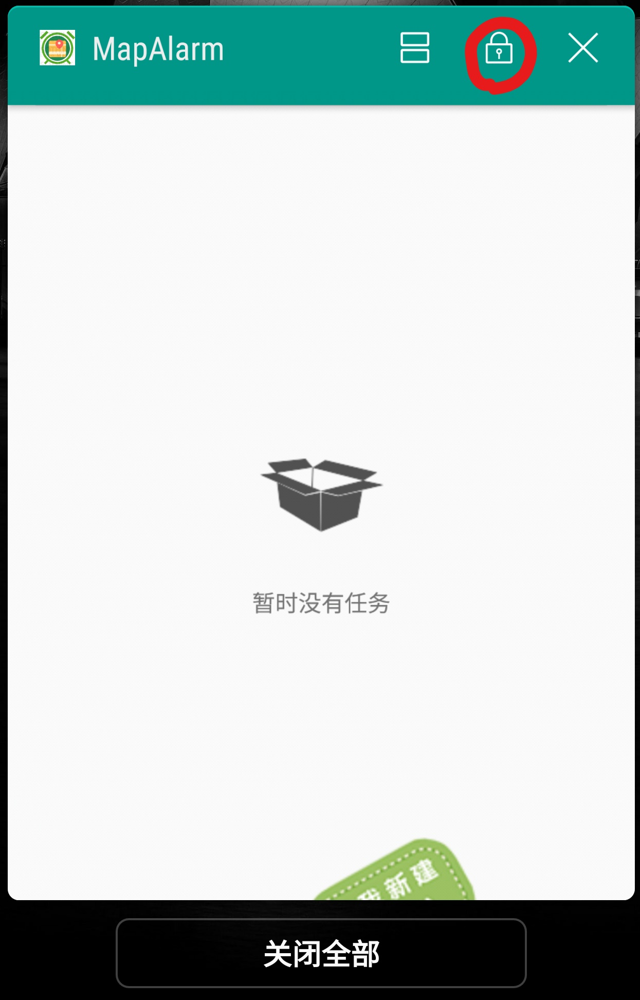
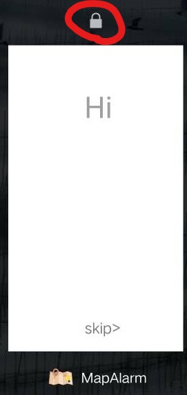

MapAlarm简介
1.这是一个什么APP，它能干什么？
闹钟的功能一直都是“在某一个时间，提醒我干一件事情”。
但随着时代的发展，人们生活节奏的加快，我们有许多时候的需求是“在某一个地点，提醒我干一件事情”。比如
“当我下班回家路过加油站时，提醒我去给车加油”或者“当我到达宿舍楼下时，提醒我去取洗好的衣服”，
“路过加油站”和“到达宿舍楼下”的时间显然并不能确定。但这类事件有一个特点，那就是，它们的地点是确定的。
MapAlarm这款APP，可以为你设置“当到达一个地点，提醒你干一件事情”这样的闹钟。
闹钟，从今天起，可以基于地点设置。
回到顶部
2.关于后台运行的问题
为了能够使您在目标地点准确及时地收到提醒，请将此APP加入白名单，并锁定在后台。放心，我们绝对不会干什么坏事的。
比如像这样：


不同手机，不同系统版本的界面不大相同，总之给予我们的APP最高通行权，我们也会给你最精准及时的提醒
回到顶部
3.关于定位准度的问题
本软件定位部分使用的是高德地图提供的API接口，它有三种定位模式：
1.高精度模式（GPS+网络）
2.省电模式（仅网络）
3.设备传感器模式（仅GPS）
其中网络定位包含了WIFI定位和基站定位，它们的误差可能在几米到几十米不等
GPS定位包含了位移传感器定位和GPS芯片定位，它们在宽广地带的误差在3米以下
高德地图关于定位精度的官方解释
在本APP的日常使用中，我们建议采用高精度模式，这样才能更精准地为您推送提醒。或许你会问：这样后台一直在请求定位
的话不会很耗电吗？答案是不会，具体解释请看关于功耗控制的问题
回到顶部
4.关于功耗控制的问题
本APP通过阶梯设置定位频率的方式，极大地降低了定位所产生的功耗，相同使用时间下电量消耗远不及普通的导航软件，
正常使用的情况下几乎感受不到耗电的增加。
本APP的定位策略：
1.当用户距离激活的目标地点的最小距离大于3公里或者静止不动时，每20秒请求一次定位。
2.当用户距离激活的目标地点的最小距离位于一公里到三公里之间时，每10秒请求一次定位。
3.当用户距离激活的目标地点的最小距离小于1公里且正在运动时，每3秒请求一次定位。直到进入了预先设置的提醒范围后，停止定位。
4.当用户目前没有激活的目标地点时，不进行定位。
普通导航软件是不分青红皂白一律设置为每秒请求一次定位。所以我们的APP的耗电量远远小于导航软件的耗电量。
回到顶部
5.问题反馈
开发者的邮箱：
644199325@qq.com
1965182923@qq.com
www.huwenhu@qq.com
回到顶部
6.开发团队的一些胡言乱语
几百年前，闹钟被发明了出来，几百年以后，它的形态千奇百怪，英国的大本钟，放在床头的小闹钟，到现在手机上，智能手表上
的闹钟......
但在功能上依然仅限于基于时间进行提醒，也没有人想过对它进行一些彻底的改造。或许这东西就像勺子、筷子一样，
一旦人们习惯了，就很难有突破性的改进了。今天我们做了一个基于位置信息的闹钟，但其实，我们认为，这并不是这个应用最好的归宿，
原因也很简单，有多少人想为了一个这个功能而单独在手机上装一个APP？
我们认为，这样的功能最好能够被集成在手机自带的闹钟功能里面，或许还能集成备忘录，任务清单等等......作为一个能根据位置信息而
规划和提醒用户一天的活动的“助手”，而不是一个个独立分散“APP”。
我们后续依然会努力完善我们的想法，去开发一个能真正具有
生产力的，基于位置信息的，聪明智能的“助手”。
--一个写完代码睡不着的深夜
回到顶部